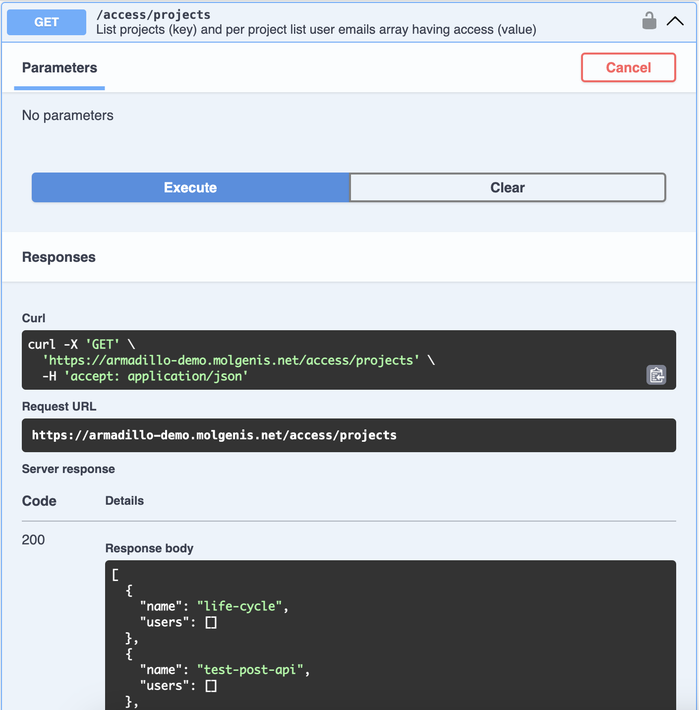

Developer Guidelines
The Armadillo and DataSHIELD community both are very welcoming to anyone who wants to contribute in any sort of form. One way of doing that is by helping with the development of Armadillo. To help you get started, we've put together some information to get you started and help you get familiarised with our code and way of working.
Commits and automatic releases
Versionnumbers are updated according to semantic versioning, using conventional commits.
It is especially important to correctly identify and commit user-facing changes. These being: bugfixes and new features. The correct prefix to a commit will trigger an automatic release. Automatic releases are set to be pre-releases.
Each commit with ! just before the colon : is a major update, indicating a breaking change. So use it wisely.
You can also add BREAKING CHANGE: in the long commit message format.
- Use
feat!: ...orfix!: ...for a major upgrade, indicating a breaking change. - Use
feat: ...for a minor upgrade, indicating a new feature. - Use
fix: ...for a patch update, indicating a bugfix.
Releases
As mentioned above, the automatic releases in Armadillo are pre-releases. Normal releases are done manually whenever deemed necessary. Of course a new release can be requested anytime.Testing and continuous integration
All our repositories contain unittests. Although we usually aim for a coverage of 80%, sometimes we make an exception. Tests are ran as part of our continuous integration, on each pull request and each merge with the master.Pull request
We encourage everyone to contribute to MOLGENIS armadillo. We do however have a couple of requirements for a pull requests, mostly because of our automatic processes.- Start the title of your PR with prefix using conventional commits (see general information tab)
- When you're fixing an issue, include "closing #issuenumber" or "fixes #issuenumber" in a commit in the PR
- Describe what your PR does shortly and how to test it.
Armadillo API and Swagger
Armadillo can be controlled using its REST API. To see and test all available endpoints, you can visit Armadillo's swaggerpage. Swagger is a very useful tool for exactly this purpose. The page can be found on/swagger-ui/index.html of each Armadillo instance. If you want to see an example of our swagger page, you can
visit it on our demo server.

Example of an endpoint tested our using our swagger page.
The serverside code of MOLGENIS Armadillo (molgenis-service-armadillo) is written in Java. In order to run it locally you will need the following prerequisites:
- Java 17 (unless running with Docker)
- Docker
Project Structure
If you look at the java code in our repository, you might notice there are two parts to it:The Armadillo part is the main application that contains all basic funcitonality and APIs. It uses the R part to communicate with R, using DataSHIELD logic.
Tools
pre-commit
This repository usespre-commit to manage commit hooks. An installation guide can be found
here. To install the hooks, run pre-commit install from the root folder of this repository. Now
your code will be automatically formatted whenever you commit. The pre-commit hooks we've set, will reformat new
code upon commit, so that it matches our code style.
Running
There are several ways to run armadillo. What you're planning on doing with armadillo determines the best way to go. If you just want to test how it works, runnig via the jar or even using docker is very suitable. If you're planning on writing code yourself, it's better to clone the project, build it yourself and run it, either using your IDE (we use IntelliJ), or running the jar you built locally.Jar
- Download the jar from our releases page.
- Copy paste the contents of
application-template.yml
and paste it in a file called
application.yml, in the same folder as the downloaded jar. - To start the application, run
java -jar molgenis-armadillo-x.yy.zz.jar. - Go to
http://localhost:8080to see the Armadillo UI.
Docker
For testing without having to installing Java you can run using docker:- Install docker-compose
- Download this docker-compose.yml.
- Execute
docker-compose up - Once it says 'Started', go to http://localhost:8080 to see your Armadillo running.
The command must run in the same directory as the downloaded docker file. We made docker available via 'docker.sock' so we can start/stop DataSHIELD profiles. Alternatively you must include the datashield profiles into this docker-compose. You can override all application.yml settings via environment variables (see commented code in docker-compose file).
IntelliJ
We develop Armadillo using IntelliJ. To do so:- Clone our project:
- Open the project in Intellij.
- Make sure the right version of Java is set in
File> Project structure... - Build the project: select the gradle button (elephant symbol, usually on the right of your intellij screen),
select
cleanand thenbuild. - Go to the
ArmadilloServiceApplicationclass (press shift-shift and search for it). - Click on the play button in front of the main function. You might have to press "Run" again if a popup with the run configuration appears.
Testing
Most of our code is covered by unittests. Although we usually aim for a coverage of 80%, sometimes we make exceptions because we value quality of tests over their quantity. We recognise that for some pieces of code it's hard to write meaningful unittests (half of some functions would have to be mocked, usually causing tests to lose their purpose). This is especially the case in our Java repository. Of course we don't want these pieces untested, therefore we have a set of release test scripts. This test is made to test basic functionality from Datamanager and Researcher perspective using the most commonly used DataSHIELD packages. This test script is used before each release to ensure Armadillo's quality. The script also runs partly (without OIDC) in our continuous integration test on each pull request, as well as the unittests.host.docker.internal error
This error is returned only in development environments, when working on an unsupported operating system and running a profile that has theresourcer R package whitelisted. The only way to fix this error, is by temporarily altering
the Armadillo source code in the
DockerService.java
Go to the install_image method to where createContainerCmd is called:
Simply add .withExtraHosts("host.docker.internal:host-gateway")) before the .exec(). To ensure the code is
properly updated, we suggest rebuilding the code before restarting Armadillo. If you already had the profile
running, you will need to restart that as well.
The user interface (UI) of MOLGENIS Armadillo is written in JavaScript, using VueJS as framework. We use yarn to
compile the code and develop in VSCode. Our setup is as follows:
- Open the armadillo repository, and build and run it in InteliJ (as described in Java Developer guide)
- Open the ui folder of the repository in VSCode.
- Install using:
- Run dev server using: You can now login on http://localhost:8080 and then switch to http://localhost:8081 to directly see the changes you're changing the UI code.
We maintain several R packages:
We aim to release all our packages (excluding DSUpload) to CRAN, to increase visibility and compatibility. This means that documentation and vignettes should be updated in every pull request that changes or updates functionality.